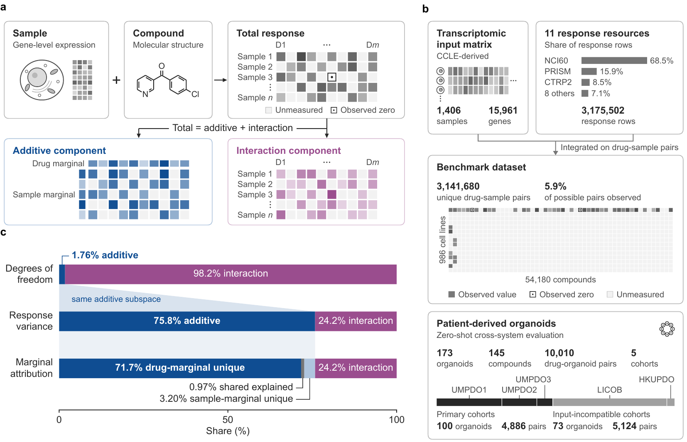

General response structure dominates variance.
Additive drug and sample effects occupy only 1.76% of the degrees of freedom but carry 75.8% of response variance. The additive share remains 59–83% within each of the five largest resources.
DrugDis / component-resolved evaluation
Strong overall accuracy can be driven by general drug and sample tendencies even when context-specific effects are recovered poorly.
DrugDis separates measured and predicted responses into additive effects and drug–sample interactions on the same observed pairs, then asks which component a model recovers, at what magnitude and with what error.

Ask what improved: overall response, interaction direction, interaction error or an independently assessed outcome.
DrugDis uses one support-defined orthogonal decomposition for both measurements and predictions. It separates component recovery from interaction magnitude and prediction error, with repeated measurements providing an empirical reference where available.
01 / Orthogonal decomposition
On the observed drug–sample pairs, the total response splits exactly into an additive component, the best additive fit of drug and sample marginals, and a drug–sample interaction component orthogonal to it.
The interaction component is defined relative to the observed pairs.
Across 3.14 million drug–sample pairs, component-resolved evaluation changes how model performance, representations and generalization should be interpreted.
Additive drug and sample effects occupy only 1.76% of the degrees of freedom but carry 75.8% of response variance. The additive share remains 59–83% within each of the five largest resources.
Under held-out cell lines, the same model reaches 0.86 total-response correlation but only 0.32 interaction correlation.
Interactions absorb 77% of squared error for held-out cell lines, whereas additive effects absorb 64% for held-out compounds. The two regimes test different predictive capabilities.
Matched component supervision increases interaction correlation for held-out compounds and zero-shot organoids. Interaction R² improves consistently only for held-out compounds (+0.020); in organoids it changes by only +0.002 on average and remains below zero.
Apparent representation advantages depend on the evaluated component, decoder and distribution shift; they are not properties of an embedding alone.
Changing the evaluation criterion changes which model is selected, but does not reduce prespecified GDSC2 selectivity MAE relative to aggregate-correlation selection.
The cell-line benchmark integrates eleven DROMA response resources on one CCLE-derived transcriptomic input. Patient-derived organoids are evaluated separately in zero-shot transfer with no organoid fine-tuning.
| Evaluation | Samples | Compounds | Pairs |
|---|---|---|---|
| Cell-line benchmark | 986 | 54,180 | 3,141,680 |
| Primary organoid set | 100 | 78 | 4,886 |
| All organoid cohorts | 173 | 145 | 10,010 |
Models are tested with held-out cell lines, held-out compounds and zero-shot organoid transfer. Because NCI60 contributes 68.5% of source response rows, additive variance is also decomposed within each major resource and after excluding NCI60.
Given measured and predicted responses on the same drug–sample pairs, the API returns total, additive and interaction recovery, interaction amplitude and exact component-wise error attribution.
Run the bundled synthetic demo for an interface check, or pass your own test pairs with measured and predicted responses. The repository also holds every script, split manifest and result table behind the manuscript.
from drugdis.evaluate import component_profile
scores = component_profile(
test_frame, # SMILES, Sample_ID per row
y="Sensitivity",
yhat="prediction",
)
print(scores["rawPCC"], scores["sharedPCC"],
scores["intPCC"], scores["R2_interaction"])Python 3.11+ · NumPy / pandas / SciPy core · MIT License
The public repository includes the code, the prespecified split manifests, the canonical result tables and the manuscript resources used on this page. The processed inputs are hosted on Hugging Face.